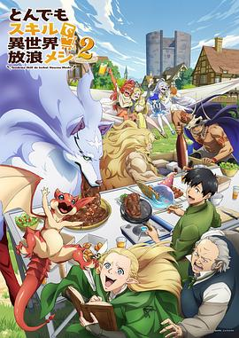

8.3
拥有超常技能的异世界流浪美食家 第二季
Campfire Cooking in Another World with My Absurd Skill Season 2
2025
日本
评分 8.3
导演:
松田清（Kiyoshi Matsuda）
演员:
内田雄马 / 日野聪 / 木野日菜 / 村濑步 / 内田真礼 / 大地叶 / 甲斐田裕子
类型:
喜剧,奇幻
剧情简介
当平凡的上班族向井田刚被误召唤至剑与魔法的异世界，他的唯一技能竟是“网络超市”——能够从现代日本下单食材，瞬间送达这片异域。初入荒野，他化身为“流浪美食家”，携带锅铲、调味料与食材，踏上旅途。在第二季里，刚与他的史莱姆好友“四井”又迎来新伙伴，一起穿行于城堡酒馆、森林与地下迷宫。他用罐装咖喱、和风拉面、牛排搭配魔兽火焰，令各种怪物愉悦地陪吃、契约、守护。他从破碎的古代战场走入神域遗迹，把食材在焰火与祭坛之间跳动。逐渐，他意识：旅途不仅是“吃吃吃”，还有隐藏于食材背后的真相——神祇的交易、契约的枷锁、人与怪兽的边界。他在赤铁矿洞中烤出异种龙肉，在幽暗森林边用泡菜与魔物共舞，每一餐都变成战斗与生存的礼赞。本季延续轻松温暖的料理氛围，却在奇幻世界建立起“食物即武器、烹饪即契约”的新维度。画面中，锅铲击碎冰块、汤汁在月光中蒸腾、魔兽舔舐盘边的酱汁——让观众既想流口水，又兴奋于冒险。若你热爱“异世界＋料理＋冒险”组合，那么这一季不只是吃饭，更是与异域共振、与怪物共飨的奇妙旅程。